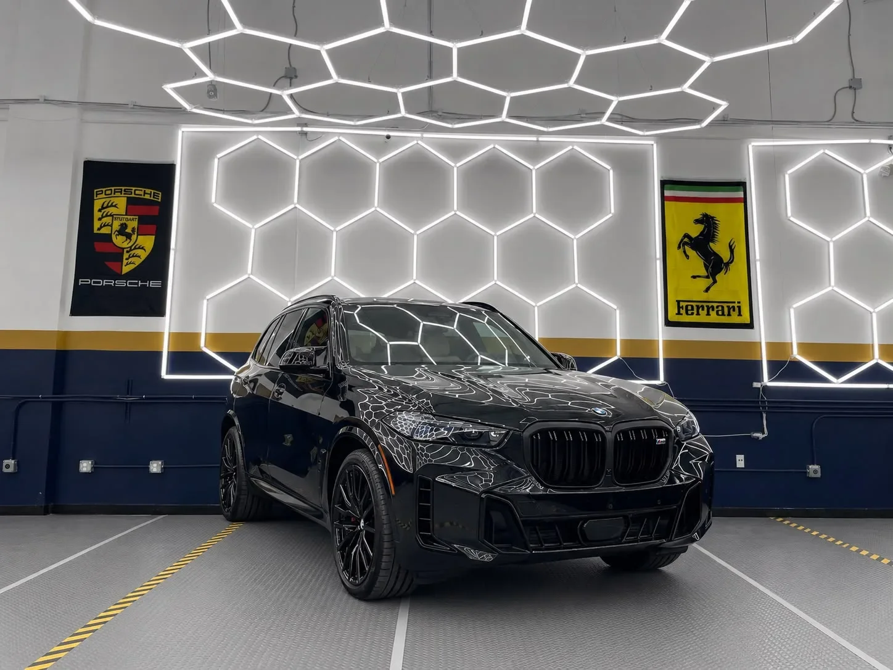
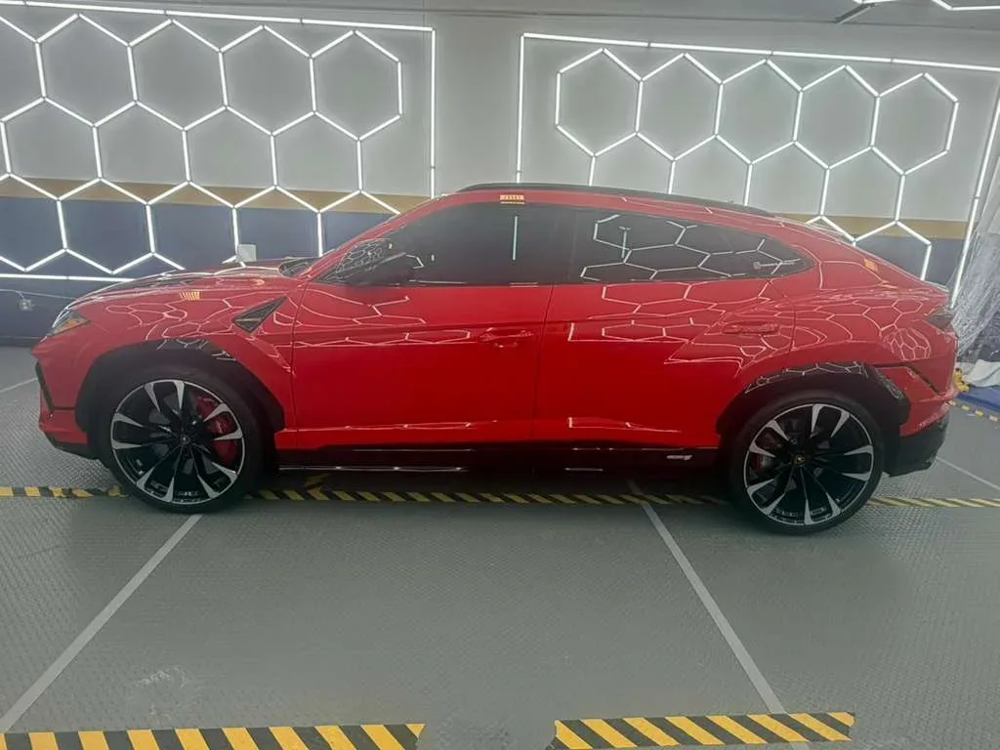
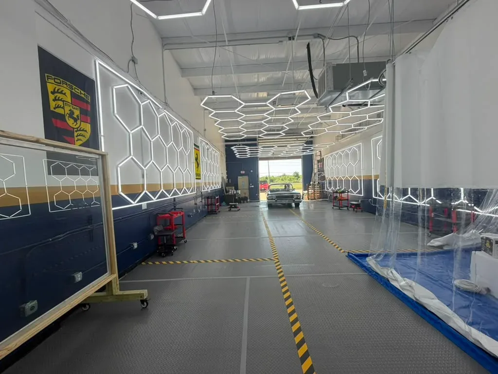
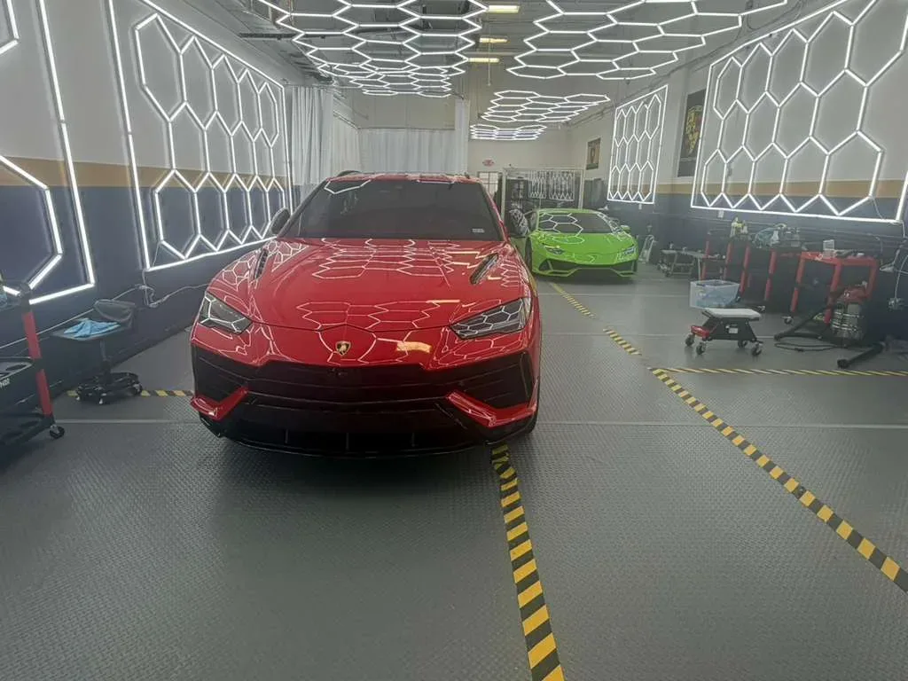
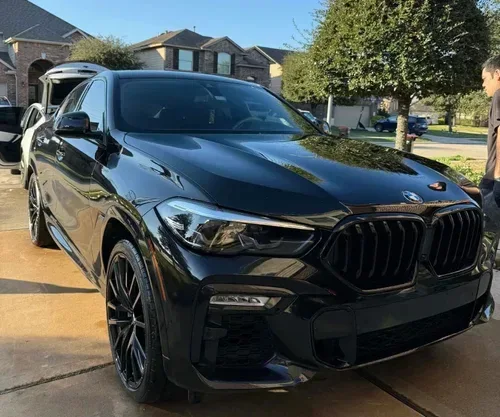
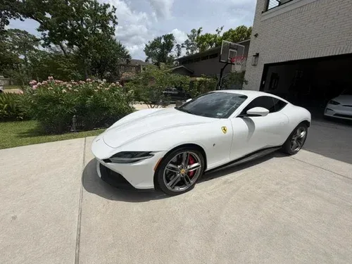

Get a quote · $249 tint
Ceramic window tint for your side windows + rear windshield.
Ceramic Window Tint
Side Windows + Rear Windshield
Cooler rides, more comfort, better protection. Nano-ceramic film that rejects heat, slashes glare and blocks 99% of UV rays, installed bubble-free for a clean, lasting factory appearance.
Call (832) 993-8411Visualize your window tint
Explore different tint shades and see how they look before you book. We recommend the right film type and shade for your goals.

35%Preview only: the photo is darkened to suggest each shade.
Pick your shade
HITEK Ceramic IR available shades: 2%, 5%, 15%, 20%, 30%, 35%, 40%, 45%, 50% and 70%.
Texas law allows 25% VLT on front side windows and any darkness on rear windows. We ensure every installation stays compliant.
Precision film engineered for comfort
Modern nano-ceramic formulations reject solar heat and block over 99% of UV radiation while preserving phone and GPS signal strength throughout your cabin.
UV protection
Every film we install blocks 99% of UV rays, protecting your skin on every drive.
Infrared heat rejection
So your cabin stays cooler and your A/C doesn’t have to work as hard.
No signal interference
Non-metal film, so your phone, GPS and toll tag work exactly as they did before.
Transferable warranty
Covers bubbling, peeling, cracking and color fading.
Figures from A&A Quality Auto Spa for HITEK Ceramic IR; 75% infrared rejection is at 5% shade. Clear, distortion-free optical quality with long-term color stability.
Excellence in every application
Trained technicians. Ongoing training and certification in the latest film and coating application methods.
Premium materials only. We choose established brands known for durability, never cutting corners with low-grade film.
Controlled install space. Our clean, climate-controlled facility eliminates dust and contaminants for a pristine finish.
Lifetime warranty coverage. Our warranty transfers between owners and covers material defects nationwide.

Clean, precise, done the same day
Discuss & select
We recommend the right film type and shade for your goals and confirm compliance with your state’s legal tint limits.
Deep clean glass
All glass surfaces are thoroughly cleaned in a filtered, temperature-controlled bay for a flawless, bubble-free finish.
Cut & apply
Film is computer-cut to fit your exact glass contours and hand-applied edge to edge by a trained, certified technician.
Final check & care
A thorough quality inspection followed by detailed care instructions. Your tint cures completely over the next few days.
Work we’re proud to show



Your window tint questions answered
What does the $249 offer include?
Do you tint trucks and SUVs in Richmond, TX?
What tint darkness is legal in Texas?
Will ceramic film interfere with my phone or GPS?
How long does window tinting take?
When can I roll down my windows?
What warranty comes with the tint?
Where is A&A Quality Auto Spa?
Cooler rides, more comfort, better protection
Ceramic window tint for your side windows + rear windshield, now $249 at A&A Quality Auto Spa in Richmond, TX. Fill out the form or call to schedule your installation.